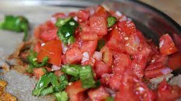

timatim selata recipe

Description
timatim selata is a popular tomato salad meal
in Ethiopia and Eritrea and today I will show you
how to make it
Ingridients
Dressing
- 1/4 cup canola oil
- 3 tbsp vinegar
- 3 tbsp lemon juice
- 2 cloves of garlic(minced)
- 2 tbsp berbere
Salad
- 4 large tomatoes
- 1 finely chopped onion
- 2 chopped and de-seeded jalapeno peppers
- 2 pieces of injera(torn into small pieces)
Steps
-
Combine the ingredients for the dressing and pour over
the chopped vegetables (and injera, if you wish). Serve chilled.